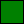
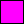

Typ wartości atrybutu „Color” odnosi się do definicji koloru opisanych w specyfikacji [SRGB]. Wartość koloru może być albo liczbą szesnastkową (poprzedzoną znakiem kratki), albo jedną z następujących szesnastu nazw kolorów. W nazwach koloru nie uwzględnia się wielkości liter.
 |
Black = "#000000" |  | Green = "#008000" |
 |
Silver = "#C0C0C0" |  |
Lime = "#00FF00" |
| Gray = "#808080" | Olive = "#808000" |
||
 |
White = "#FFFFFF" |  |
Yellow = "#FFFF00" |
 |
Maroon = "#800000" |  |
Navy = "#000080" |
 |
Red = "#FF0000" |  |
Blue = "#0000FF" |
 |
Purple = "#800080" |  |
Teal = "#008080" |
|  | Fuchsia = "#FF00FF" |  |
Aqua = "#00FFFF" |
Zatem zarówno wartość koloru "#800080", jak i "Purple" odnoszą się do koloru purpurowego.
Autorzy mogą używać następujących rozpoznawanych typów łączy, spisanych tu razem z ich umownymi interpretacjami. Wartość LinkTypes odnosi się do listy rozdzielonych spacjami typów łączy. Wewnątrz typów łączy nie są dozwolone białe znaki.
W tych typach łączy nie uwzględniana jest wielkość liter, tj. „Alternate” ma takie samo znaczenie jak „alternate”.
Programy użytkownika, maszyny wyszukujące, itp. mogą interpretować te typy łączy na różne sposoby. Na przykład programy użytkownika mogą udostępniać dokumenty, na które wskazują łącza poprzez pasek nawigacji.
- Alternate
- Wyznacza zastępcze wersje dla dokumentu, w którym łącze występuje. Używane łącznie z atrybutem
hreflangwskazuje przetłumaczoną wersję dokumentu. Używane razem z atrybutemmediawskazuje wersję zaprojektowaną dla innego typu medium (lub mediów). - Stylesheet
- Odsyła do zewnętrznego arkusza stylów. Szczegóły w module Style Sheet. Używany razem z typem łączy „Alternate” dla arkuszy stylów między którymi użytkownik może wybierać.
- Start
- Odsyła do pierwszego dokumentu z zestawu dokumentów. Ten typ łączy wskazuje maszynom wyszukiwawczym na dokument będący według autora punktem początkowym całego zestawu.
- Next
- Odsyła do następnego dokumentu w liniowej sekwencji dokumentów. Programy użytkownika mogą decydować się na wcześniejsze załadowanie „następnego” dokumentu w celu zredukowania oczekiwanego czasu ładowania.
- Prev
- Odsyła do poprzedniego dokumentu w uporządkowanej serii dokumentów. Niektóre programy użytkownika obsługują także synonim „Previous”.
- Contents
- Odsyła do dokumentu służącego za spis treści. Niektóre programy użytkownika obsługują także synonim ToC (skrót od „Table of Contents”).
- Index
- Odsyła do dokumentu zawierającego skorowidz (indeks) dla bieżącego dokumentu.
- Glossary
- Odsyła do dokumentu zawierającego słownik terminów odnoszący się do bieżącego dokumentu.
- Copyright
- Odsyła do zapisu o prawach autorskich dla bieżącego dokumentu.
- Chapter
- Odsyła do dokumentu służącego za rozdział w zestawie dokumentów.
- Section
- Odsyła do dokumentu służącego za sekcję w zestawie dokumentów.
- Subsection
- Odsyła do dokumentu służącego za podsekcję w zestawie dokumentów.
- Appendix
- Odsyła do dokumentu służącego za dodatek w zestawie dokumentów.
- Help
- Odsyła do dokumentu udzielającego pomocy (więcej informacji, łącza do innych źródeł informacji, itd.)
- Bookmark
- Odsyła do zakładki. Zakładka to łącze do miejsca zawierającego hasła kluczowe dla rozbudowanego dokumentu. Atrybut title może być użyty, na przykład, w celu nazwania zakładki. Weź pod uwagę, że w każdym dokumencie może być zdefiniowanych kilka zakładek.
Atrybut typu MediaDesc to lista rozdzielonych przecinkami deskryptorów mediów. Oto lista rozpoznawanych deskryptorów mediów:
- screen
- Przeznaczony dla niestronicowanych ekranów komputerowych.
- tty
- Przeznaczony dla mediów używających siatki ze znakami o stałej szerokości, takich jak telegrafy, terminale lub przenośne urządzenia z ograniczonymi możliwościami wyświetlania.
- tv
- Przeznaczony dla telewizorów i podobnych urządzeń (niska rozdzielczość, kolor, ograniczona możliwość przewijania).
- projection
- Przeznaczony dla rzutników.
- handheld
- Przeznaczony dla urządzeń przenośnych (mały ekran, monochromatyczne, grafika oparta na mapach bitowych, ograniczona przepustowość łączy).
- Przeznaczony dla stronicowanych, nieprzezroczystych materiałów oraz dla dokumentów przeglądanych na ekranie w trybie podglądu wydruku.
- braille
- Przeznaczony dla urządzeń dotykowych Braille'a.
- aural
- Przeznaczony dla syntezatorów głosu.
- all
- Odpowiedni dla wszystkich urządzeń.
Przyszłe wersje XHTML mogą wprowadzić nowe wartości i mogą zezwolić na wartości sparametryzowane. W celu ułatwienia wprowadzenia tych rozszerzeń, programy użytkownika zgodne ze standardem muszą posiadać zdolność parsowania wartości atrybutu media w następujący sposób:
- Wartość jest listą rozdzielonych przecinkami pozycji. Na przykład,
media="screen, 3d-glasses, print and resolution > 90dpi"
jest przeobrażane w:
"screen" "3d-glasses" "print and resolution > 90dpi"
- Każda z pozycji jest ucinana bezpośrednio przed pierwszym znakiem niebędącym literą z zestawu US ASCII [a-zA-Z] (ISO 10646 hex 41-5A, 61-7A), cyfrą [0-9] (hex 30-39) lub łącznikiem/minusem (hex 2D). W tym przykładzie daje to:
"screen" "3d-glasses" "print"
- W dalszej kolejności następuje nieuwzględniające wielkości liter dopasowywanie zdefiniowanych powyżej typów mediów. Programy użytkownika mogą zignorować niedopasowywujące się pozycje. W powyższym przykładzie pozostaną screen i print.
Uwaga. Arkusze stylów mogą zawierać zależne od mediów odmiany (np. konstrukcja CSS w rodzaju @media). W takich wypadkach może być odpowiednie zastosowanie "media =all".
Dane skryptu mogą zawierać się w elemencie script oraz w wartości atrybutów zdarzenia wewnętrznego. Programy użytkownika nie mogą analizować danych skryptu jako oznakowanie HTML, lecz muszą zamiast tego przekazać je jako dane do maszyny skryptowej.
Uwzględnianie wielkości liter w danych skryptu zależy od języka skryptu.
Weź proszę pod uwagę, że dane skryptu będące zawartością elementu nie mogą zawierać odwołań znakowych, lecz dane skryptu będące wartością atrybutu — mogą.